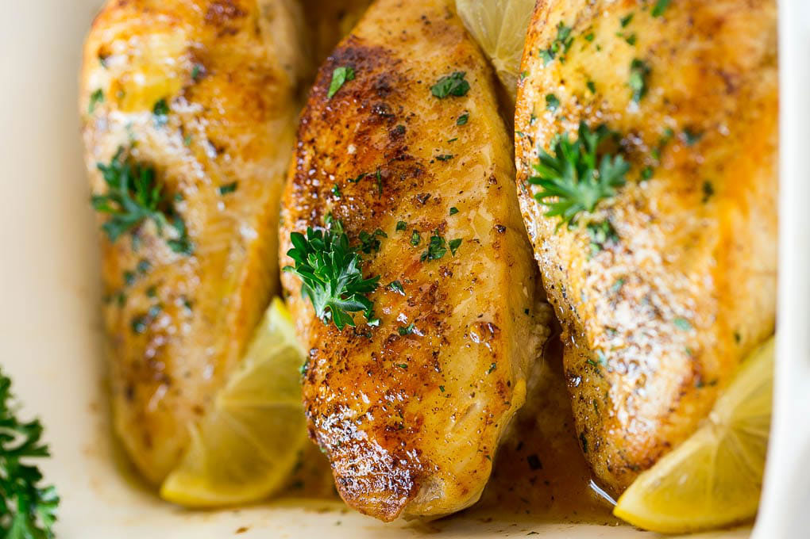
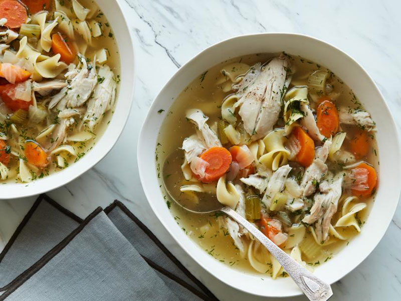
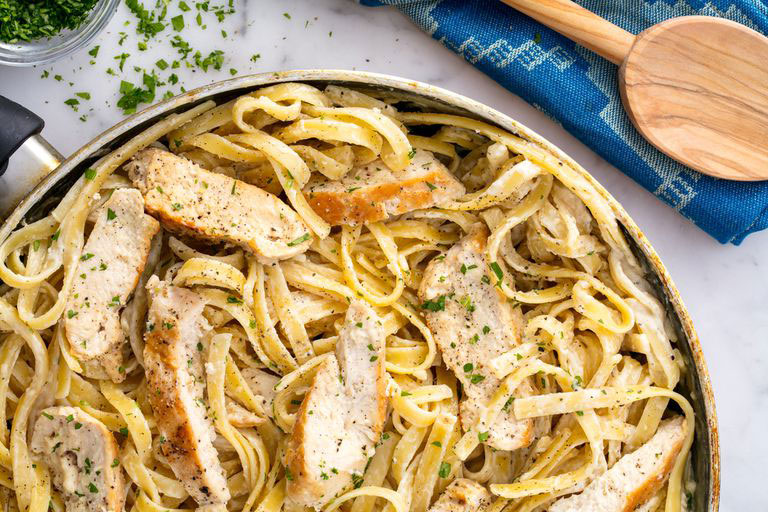

1/2 loaf sourdough bread, torn into bite-size pieces
6 tbsp. olive oil, divided
1 bulb fennel, cut into 1/2-inch-thick wedges
4 shallots, quartered
Kosher salt
freshly ground black pepper
4 small chicken leg quarters (about 2 3/4 pounds total)
1/2 c. dry white wine
1/2 c. fresh apple cider
6 sprigs thyme
4 cups baby kale
2 scallions, thinly sliced
lemon wedges, for serving
Directions
Preheat oven to 375°F. Toss bread with 4 tablespoons oil on a large rimmed baking sheet; arrange in a single layer. Bake, turning once, until golden brown and crisp (but still slightly chewy on the inside), 15 to 20 minutes.
Meanwhile, heat 1 tablespoon oil in a large skillet over medium-high heat. Add fennel and shallots. Season with salt and pepper. Cook, stirring, until golden brown, 2 to 4 minutes.
Heat remaining tablespoon oil in a large oven-proof skillet over medium heat. Season chicken with salt and pepper. Cook, skin sides down, until golden brown, 5 to 6 minutes. Remove chicken to a plate. Add wine and cook until syrupy, about 1 minute. Add cider, thyme, and fennel and shallot mixture to skillet. Top with chicken, skin sides up. Transfer to oven and roast until chicken is cooked through, 20 to 25 minutes.
Transfer chicken to a serving platter. Transfer vegetables to a bowl with a slotted spoon or tongs; discard thyme. Simmer liquid in skillet on medium-high until reduced to about 1/3 cup, 4 to 6 minutes.
Add bread and vegetables to reduced liquid and toss to coat. Season with salt. Fold in kale and scallions; transfer to platter with chicken. Serve with lemon wedges alongside.
Baked Lemon Chicken

Ingredients
1 1/4 pounds boneless skinless chicken breasts
1 tablespoon olive oil
salt and pepper to taste
3 tablespoons butter melted
1 teaspoon Italian seasoning
1 teaspoon minced garlic
1/4 cup chicken broth
2 tablespoons lemon juice
1 tablespoon chopped parsley
lemon slices for serving optional
Directions
Preheat the oven to 400 degrees. Season the chicken breasts on both sides with salt, pepper and the Italian seasoning.
Heat the olive oil in a large pan over medium high heat. Add the chicken breasts and cook for 3-5 minutes on each side or until browned.
Transfer the chicken to a baking dish.
In a small bowl, mix together the butter, garlic, chicken broth and lemon juice. Pour the butter mixture over the chicken.
Bake for 25 minutes or until chicken is cooked through. Bake time may vary depending on the thickness of your chicken breasts.
Spoon the sauce on the bottom of the baking dish over the chicken, then sprinkle with parsley and serve. Garnish with lemon slices if desired.
Instant Pot Chicken Noodle Soup

Ingredients
1 tablespoon olive oil
5 medium carrots, cut into 1/4-inch-thick diagonal slices
3 large stalks celery, cut into 1/2-inch-thick slices
2 cloves garlic, minced
1 large yellow onion, cut into a large dice
Kosher salt and freshly ground black pepper
One 3-pound whole chicken
One 3-inch piece ginger, halved lengthwise (optional)
6 ounces extra-wide egg noodles (about 4 cups)
2 tablespoons fresh dill fronds, roughly chopped
Directions
Turn a 6-quart Instant Pot® to the high sauté setting. Add the oil and once hot add the carrots, celery, garlic, onion, 1 tablespoon salt and a large pinch of pepper. Cook, stirring, until the vegetables are slightly softened, 4 to 5 minutes.
Add the chicken, ginger, if using, and 8 cups water. Follow the manufacturer's guide for locking the lid and preparing to cook. Set to pressure cook on high for 20 minutes.
After the pressure cook cycle is complete, follow the manufacturer's guide for quick release and wait until the quick release cycle is complete. Be careful of any remaining steam, unlock and remove the lid. Remove the ginger and discard. Use a pair of tongs to remove the chicken from the pot and put into a large bowl and allow to cool for several minute
Switch the Instant Pot® to the high sauté setting and bring the soup to a boil. Once at a boil, add the noodles and cook until al dente, 4 to 5 minutes.
While the noodles are cooking, use 2 forks to remove the skin and bones from the chicken and shred the meat into bite-size pieces. Season the chicken generously with salt and pepper then add the meat back to the pot along with the dill. Season the soup with additional salt and pepper if needed.
Chicken Alfredo

Ingredients
2 tbsp. extra-virgin olive oil
2 boneless skinless chicken breasts
Kosher salt
Freshly ground black pepper
1 1/2 c. whole milk
1 1/2 c. low-sodium chicken broth
2 cloves garlic, minced
8 oz. fetuccini
1/2 c. heavy cream
1 c. freshly grated Parmesan
Freshly chopped parsley, for garnish
Directions
In a large skillet over medium-high heat, heat oil. Add chicken and season with salt and pepper. Cook until golden and cooked through, 8 minutes per side. Let rest 10 minutes, then slice.
Add milk, broth, and garlic to skillet. Season with salt and pepper and bring to a simmer. Add fettuccine, stirring frequently for about 3 minutes. Let cook until al dente, 8 minutes more.
Stir in heavy cream and Parmesan until combined. Simmer until sauce thickens.
Remove from heat and stir in sliced chicken. Garnish with parsley.